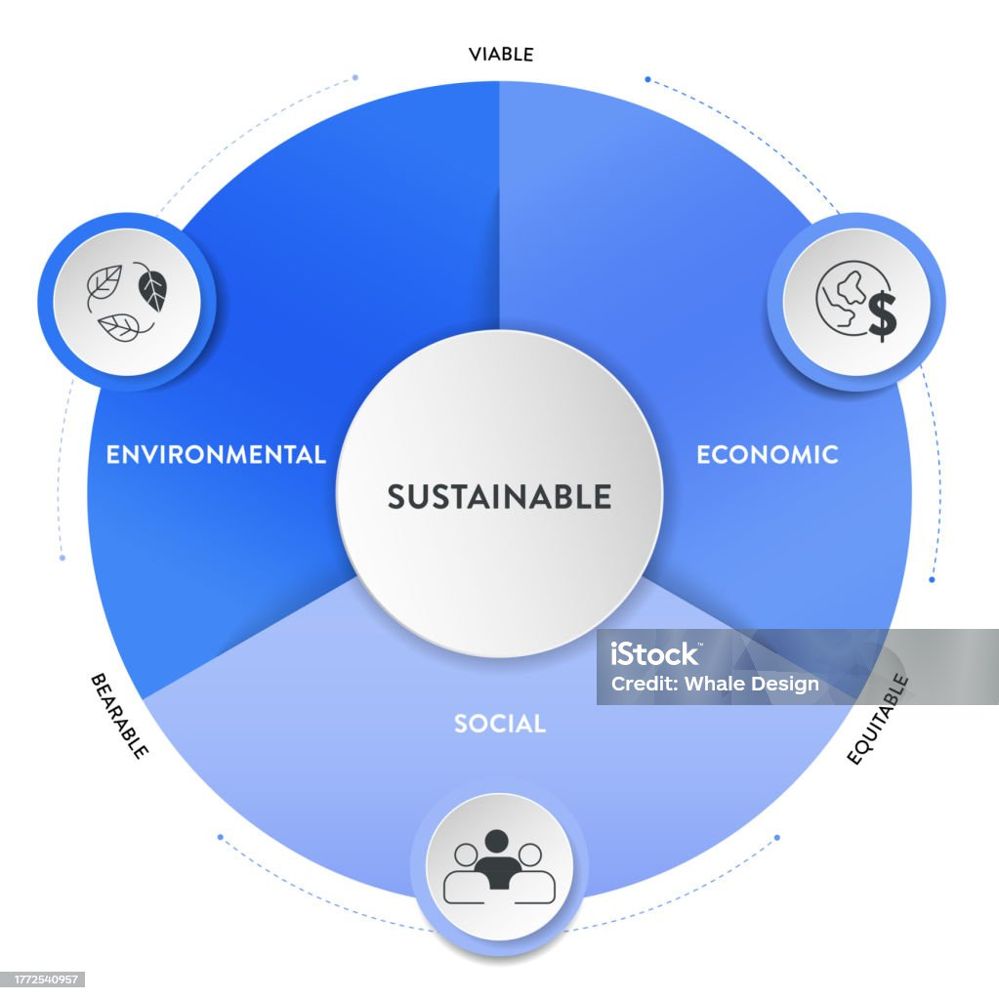

Belajar Ekonomi
Berkelanjutan Menyenangkan
Selamat datang di EcoLearn! Platform interaktif untuk memahami konsep kegiatan ekonomi berkelanjutan—Produksi, Distribusi, dan Konsumsi—dengan pendekatan sustainability living.

Pendahuluan
Ekonomi berkelanjutan adalah pendekatan yang menyeimbangkan pertumbuhan ekonomi, kelestarian lingkungan, dan kesejahteraan sosial untuk memenuhi kebutuhan saat ini tanpa mengorbankan generasi mendatang. Dalam kehidupan sehari-hari, konsep sustainability living ini diterapkan melalui kegiatan produksi, distribusi, dan konsumsi yang bertanggung jawab. Setiap individu berperan penting dalam pelestarian ini, salah satunya melalui prinsip 3R (Reuse, Reduce, Recycle) sebagai langkah praktis dan efektif untuk mengurangi limbah dan menjaga kelestarian lingkungan (Cinta Rahmi et al., 2021).

Gambar 1. Pilar pembangunan berkelanjutan
Keberlanjutan Lingkungan
Keberlanjutan lingkungan merupakan inti berfokus pada upaya pelestarian dan pemeliharaan kesehatan planet Bumi kita. Pilar ini menekankan pentingnya penggunaan sumber daya alam secara bertanggung jawab dan bijaksana, pengurangan produksi limbah dan tingkat polusi yang dihasilkan dari berbagai aktivitas, serta konservasi keanekaragaman hayati yang sangat berharga.
Fokus utama pada keberlanjutan lingkungan ini menuntut tindakan yang segera dan signifikan untuk mengatasi permasalahan perubahan iklim yang semakin mendesak, melindungi ekosistem alami yang beragam dan rentan, serta memulihkan kondisi lingkungan yang telah mengalami kerusakan akibat aktivitas manusia.
Keberlanjutan Sosial
Keberlanjutan sosial memiliki fokus utama pada promosi komunitas yang adil dan inklusif, yang dapat memenuhi kesejahteraan seluruh individu dalam masyarakat. Pilar ini menekankan betapa pentingnya penyediaan akses yang merata terhadap kebutuhan dasar manusia, seperti pendidikan berkualitas, layanan perawatan kesehatan yang memadai, serta berbagai peluang untuk pengembangan diri secara pribadi dan profesional bagi setiap anggota masyarakat.
Keberlanjutan Ekonomi
Pilar ini mendorong pengelolaan sumber daya ekonomi yang bertanggung jawab dan efisien, penerapan praktik bisnis yang berkelanjutan dan beretika, serta promosi model ekonomi sirkular yang meminimalkan limbah dan memaksimalkan penggunaan sumber daya.
Dengan mengimplementasikan prinsip-prinsip keberlanjutan ekonomi, kita dapat memastikan bahwa seluruh kegiatan ekonomi yang dilakukan selaras dengan tujuan untuk mencapai kesejahteraan lingkungan dan sosial secara bersamaan, sehingga membuka jalan bagi terciptanya ekonomi global yang makmur, adil, dan berkelanjutan dalam jangka panjang (Ade S, 2025).
Materi Pembelajaran
Materi: Produksi Berkelanjutan
Definisi Produksi
Produksi merupakan kegiatan menciptakan atau menambah nilai dan manfaat suatu barang dan atau jasa. Produksi adalah transformasi dari faktor-faktor produksi menjadi produk atau hasil produksi. Kegiatan produksi mengolah barang mentah menjadi barang setengah jadi dan menjadi barang jadi.
Jenis Produksi
Hasil produksi dibagi menjadi dua yaitu produksi barang dan jasa:
Merupakan kegiatan mengubah sifat maupun bentuk benda. Produksi barang ini dibedakan menjadi barang modal dan barang konsumsi. Misalnya produksi roti, produksi beras, produksi lemari, penjahit, dan lain-lain.
Merupakan kegiatan menambah nilai guna suatu barang tanpa mengubah bentuknya. Misalnya jasa perawatan kecantikan, jasa pengobatan, dan jasa pariwisata.
Tujuan Kegiatan Produksi
Tujuan utama kegiatan ekonomi adalah untuk memenuhi kebutuhan manusia dalam rangka kemakmuran. Kemakmuran merupakan keadaan di mana jumlah alat pemuas kebutuhan cukup dan dapat digunakan untuk memenuhi kebutuhan manusia.
Secara khusus tujuan produksi adalah meningkatkan keuntungan bagi produsen atau perusahaan.
Faktor-Faktor Produksi
Faktor produksi merupakan segala sesuatu yang diperlukan dalam proses produksi barang dan jasa. Produksi tidak hanya memerlukan bahan baku tetapi juga faktor lain yang mendukung proses produksi dapat berjalan dengan baik. Faktor produksi dibedakan menjadi 4 (empat) yaitu:
Faktor alam menjadi salah satu komponen yang sangat penting dalam kegiatan produksi. Faktor alam merupakan hasil alam baik berupa benda maupun makhluk hidup yang digunakan dalam kegiatan produksi untuk mencapai kemakmuran.
Tenaga kerja merupakan faktor produksi yang menjalankan kegiatan produksi secara langsung maupun tidak langsung dengan tenaganya untuk menghasilkan barang dan jasa. Misalnya staf bagian produksi dan operator mesin produksi.
Faktor modal tidak hanya berbentuk uang tunai. Faktor modal meliputi semua barang dan benda yang digunakan untuk memperlancar dan memaksimalkan proses produksi. Faktor produksi modal dapat berupa peralatan, mesin, gedung, dan benda penunjang kegiatan produksi lainnya.
Faktor keahlian berfungsi untuk mengontrol dan memastikan faktor-faktor produksi berjalan dengan baik dan menghasilkan produksi yang maksimal. Faktor produksi alam, tenaga kerja, dan modal yang ada tidak akan maksimal jika perusahaan tidak memiliki faktor keahlian yang mampu mengelola semua hal tersebut.

Contoh Praktik Produksi Berkelanjutan
Produksi Kopi Agroforestry di Lampung Barat
Dalam konsep sustainability living, setiap proses produksi diharapkan dapat mengurangi dampak negatif terhadap lingkungan. Salah satu contoh kegiatan produksi yang berkelanjutan di Provinsi Lampung yaitu produksi lokal kopi Lampung.
Petani kopi di Lampung Barat menerapkan sistem kebun campuran atau agroforestry. Hal ini dilakukan untuk menjaga kesuburan tanah sehingga dapat meningkatkan keanekaragaman hayati serta mengurangi erosi.

Gambar 2. Petani kopi sedang memanen kopi agroforestri (Sumber: teknokra.co)
Nilai Guna & Daur Ulang
Produksi yang memanfaatkan limbah atau produk daur ulang merupakan cara untuk menambah nilai guna suatu barang menjadi produk bernilai ekonomi.
Contoh: Daur ulang botol kaca bekas menjadi lampu hias.

Gambar 3. Lampu hias dari botol kaca bekas botol minuman
Daur ulang, yaitu penggunaan kembali limbah dalam berbagai bentuk diantaranya dikembalikan ke bentuk semula, bahan baku pengganti untuk produksi lain, dipisahkan untuk diambil kembali bagian yang bermanfaat, dan diolah kembali sebagai produk samping (Prabawati, 2022).
Faktor-Faktor Produksi
Faktor produksi merupakan segala sesuatu yang diperlukan dalam proses produksi barang dan jasa. Produksi tidak hanya memerlukan bahan baku tetapi juga faktor lain yang mendukung proses produksi dapat berjalan dengan baik. Faktor produksi dibedakan menjadi 4 (empat) yaitu:
Faktor alam menjadi salah satu komponen yang sangat penting dalam kegiatan produksi. Faktor alam merupakan hasil alam baik berupa benda maupun makhluk hidup yang digunakan dalam kegiatan produksi untuk mencapai kemakmuran.
Tenaga kerja merupakan faktor produksi yang menjalankan kegiatan produksi secara langsung maupun tidak langsung. Tenaga kerja menjalankan kegiatan produksi secara langsung dan tidak langsung dengan tenaganya untuk menghasilkan barang dan jasa. Misalnya staf bagian produksi dan operator mesin produksi.
Faktor modal tidak hanya berbentuk uang tunai. Faktor modal meliputi semua barang dan benda yang digunakan untuk memperlancar dan memaksimalkan proses produksi. Faktor produksi modal dapat berupa peralatan, mesin, gedung dan benda penunjang kegiatan produksi lainnya.
Faktor keahlian berfungsi untuk mengontrol dan memastikan faktor-faktor produksi berjalan dengan baik dan menghasilkan produksi yang maksimal. Faktor produksi alam, tenaga kerja dan modal yang ada tidak akan maksimal jika perusahaan tidak memiliki faktor keahlian yang mampu mengelola semua hal tersebut.
Contoh Praktik Produksi Berkelanjutan
Produksi Kopi Agroforestry di Lampung Barat
Dalam konsep sustainability living, setiap proses produksi diharapkan dapat mengurangi dampak negatif terhadap lingkungan. Salah satu contoh kegiatan produksi yang berkelanjutan di Provinsi Lampung yaitu produksi lokal kopi Lampung.
Petani kopi di Lampung Barat menerapkan sistem kebun campuran atau agroforestry. Hal ini dilakukan untuk menjaga kesuburan tanah sehingga dapat meningkatkan keanekaragaman hayati serta mengurangi erosi.
Gambar 2. Petani kopi sedang memanen kopi agroforestri (Sumber: teknokra.co)
Nilai Guna & Daur Ulang
Produksi yang memanfaatkan limbah atau produk daur ulang merupakan cara untuk menambah nilai guna suatu barang menjadi produk bernilai ekonomi.
Contoh: Daur ulang botol kaca bekas menjadi lampu hias.
Gambar 3. Lampu hias dari botol kaca bekas botol minuman
Materi: Distribusi Berkelanjutan
Apa itu Distribusi?
Setelah kegiatan produksi, kegiatan selanjutnya yaitu kegiatan distribusi. Distribusi merupakan kegiatan menyalurkan barang atau jasa dari pihak produsen kepada pihak konsumen. Orang yang melakukan distribusi disebut distributor.
Tujuan Distribusi
- Menyalurkan barang dari produsen ke konsumen
- Barang produksi lebih berguna
- Kebutuhan barang dan jasa konsumen dapat terpenuhi
- Menjaga keberlangsungan produksi perusahaan
Distribusi Berkelanjutan
Dalam upaya melakukan distribusi hasil produksi, kegiatan produksi atau industri diharapkan dapat meningkatkan keseimbangan antara kinerja dengan isu lingkungan yang melahirkan isu baru seperti penghematan penggunaan energi, dan pengurangan polusi dalam usaha peningkatan strategi daya saing.
Dalam konteks distribusi berkelanjutan atau distribusi hijau (Green Distribution) kegiatan dalam distribusi hijau yaitu kemasan hijau dan logistik hijau. Logistik hijau atau green logistics adalah konsep yang semakin penting dalam dunia logistik yang berfokus pada pengelolaan distribusi barang secara efisien sambil meminimalkan dampak negatif terhadap lingkungan.
Praktik Logistik Hijau
Berikut adalah beberapa praktik utama yang diterapkan dalam logistik hijau:
1. Penggunaan Kendaraan Ramah Lingkungan
Penggunaan kendaraan yang ramah lingkungan seperti kendaraan listrik dan hidrogen menjadi fokus utama dalam industri logistik. Perusahaan logistik mulai beralih dari kendaraan berbahan bakar fosil ke kendaraan listrik atau kendaraan yang menggunakan bahan bakar alternatif, seperti gas alam terkompresi (CNG) atau biofuel. Kendaraan listrik, misalnya, mengurangi emisi karbon dan polusi udara, yang sangat penting di kota-kota besar dengan tingkat polusi tinggi.
Contoh Penerapan:
Perusahaan logistik seperti DHL dan FedEx telah mulai mengimplementasikan truk listrik untuk pengiriman barang di kota-kota tertentu. Truk listrik ini tidak hanya mengurangi emisi karbon tetapi juga mengurangi kebisingan di area perkotaan.
Selain truk listrik, perusahaan juga menggunakan kendaraan berbahan bakar alternatif yang lebih ramah lingkungan daripada kendaraan diesel tradisional.
2. Optimasi Rute Pengiriman
Mengoptimalkan rute adalah salah satu cara dalam mengurangi emisi karbon. Dengan menggunakan teknologi seperti sistem manajemen transportasi (TMS) dan kecerdasan buatan (AI), perusahaan dapat merencanakan rute pengiriman yang paling efisien, menghindari kemacetan, dan mengurangi jarak tempuh. dengan pengoptimalan rute tentunya perusahaan dapat menekan biaya dan mempercepat pengiriman.

Gambar 4. Kuliner Pasar Payungi Sumber: https://analisis.co.id/2021/03/29/kuy-guys-kepoin-empat-wisata-pasar-kuliner-di-kota-metro-yang-wajib-dikunjungi/Wisata
Contoh: Kuliner Payungi (Pasar Yosomulyo Pelangi) merupakan salah satu contoh distribusi yang dilakukan antara produsen dengan konsumen dalam rangka mengoptimalkan rute. Pada pasar payungi diprioritaskan pedagang yang berasal dari lingkungan sekitar yaitu warga Kelurahan Yosomulyo. Di Wisata Payungi terdapat Permainan Flying Fox, Panahan, Taman Kelinci. dan juga terdapat Jajanan Kuliner, Payungi Merchandise, Kampung Bahasa Inggris, Kampung Kopi, Payungi Universty, co-working space.
3. Pengurangan Penggunaan Kemasan Plastik
Penggunaan kemasan plastik sekali pakai adalah salah satu masalah terbesar dalam logistik yang berdampak buruk pada lingkungan. Untuk mengatasi hal ini, banyak perusahaan beralih ke bahan kemasan yang lebih ramah lingkungan, seperti kemasan yang dapat didaur ulang, biodegradable, atau berbahan dasar alami.
Jenis-Jenis Kemasan Biodegradable yang Cocok untuk UMKM:
Kertas daur ulang adalah jenis kemasan biodegradable yang paling mudah diakses dan ekonomis. Bisa digunakan untuk membungkus makanan kering, kemasan luar produk fashion, hingga amplop untuk aksesoris.
Jenis kemasan ini terbuat dari pati jagung, singkong, atau kentang. Biasanya berbentuk plastik transparan atau kantong yang bisa terurai dengan cepat.
Ini adalah jenis kemasan biodegradable tradisional yang kembali populer karena keunikan dan kesan natural-nya. Selain itu, tampilannya sangat menarik untuk konsumen lokal maupun mancanegara.
Kamu tentunya sering atau pernah melihat produk UMKM seperti makanan atau kerajinan tangan yang dibungkus dalam wadah bambu kecil atau basket dari rotan. Ini termasuk dalam kategori kemasan biodegradable karena seluruh bahan dasarnya alami.
PLA adalah plastik yang terbuat dari fermentasi gula alami seperti jagung. Ia terlihat seperti plastik biasa, tapi bisa terurai dengan cepat dalam kondisi kompos.
Brown paper atau kertas kraft juga termasuk dalam kategori kemasan biodegradable. Ia mudah dibentuk dan bisa dicetak logo usaha kamu.
Beberapa produsen kini menawarkan clamshells atau mika transparan berbahan dasar selulosa tumbuhan. Bentuknya seperti plastik mika biasa tapi cepat terurai.
Bagasse adalah limbah dari proses pembuatan gula yang kini diubah jadi bahan kemasan tahan panas dan biodegradable. Bentuk kemasannya pun bisa disesuaikan, seperti persegi panjang, lingkaran, dan lain sebagainya.
Daripada bubble wrap plastik, kamu bisa gunakan versi ramah lingkungan dari bahan pati atau kraft paper yang dilipat khusus.
Kemasan yang satu ini termasuk teknologi baru dalam dunia kemasan biodegradable, di mana jamur tumbuh dalam cetakan tertentu dan mengeras seperti busa. Setelah digunakan, ia bisa langsung dikomposkan.
4. Penerapan Teknologi untuk Meningkatkan Efisiensi Gudang
Logistik hijau juga mencakup penerapan teknologi untuk mengelola energi dengan lebih efisien di fasilitas gudang. Perusahaan logistik menggunakan teknologi untuk mengurangi konsumsi energi, seperti sistem pencahayaan LED, kontrol suhu otomatis, dan penggunaan energi terbarukan (misalnya, panel surya).
Contoh Penerapan:
Beberapa perusahaan logistik menggunakan sistem otomasi dan robotik untuk memindahkan barang dalam gudang secara efisien, mengurangi kebutuhan untuk pencahayaan tambahan atau pemanasan berlebihan, yang pada akhirnya menghemat energi.
Perusahaan seperti Walmart dan Amazon telah mengintegrasikan penggunaan energi terbarukan di fasilitas mereka, seperti pemasangan panel surya untuk mengurangi ketergantungan pada energi fosil.
5. Pengelolaan Limbah dan Daur Ulang
Pengelolaan limbah adalah aspek penting dalam logistik hijau. Banyak perusahaan logistik yang kini berfokus pada pengurangan limbah dan mendaur ulang bahan-bahan yang digunakan dalam proses logistik, seperti bahan kemasan dan barang-barang yang rusak.
Contoh Penerapan:
Perusahaan logistik mulai mengimplementasikan kebijakan untuk mengurangi limbah, seperti mendaur ulang kemasan dan barang rusak, serta menggunakan kembali bahan yang masih bisa digunakan.
Beberapa perusahaan logistik memiliki inisiatif untuk mencapai "zero-waste," yaitu mengurangi jumlah sampah yang dibuang ke tempat pembuangan akhir dengan cara mendaur ulang atau mengkomposkan limbah yang ada.
Contoh Pengolahan Limbah Organik
Pisang merupakan salah satu komoditas hortikultura terbesar yang diproduksi di Provinsi Lampung. Produksinya naik 1 peringkat dari tahun 2022, dan menjadi salah satu provinsi dengan produksi pisang terbesar kedua di Indonesia. Peningkatan produksi pisang berdampak pada peningkatan limbah kulit pisang.
Salah satu cara yang efektif untuk mengolah sampah organik kulit pisang adalah dengan mengubahnya menjadi pupuk organik cair, yang dapat meningkatkan kesehatan tanah dan menyuburkan lahan pertanian serta perkebunan. Limbah kulit pisang juga dapat dimanfaatkan menjadi sumber bioenergi serta di daur ulang menjadi keripik kulit pisang.
Jenis-Jenis Distribusi
Berdasarkan cara penyaluran, distribusi dibedakan menjadi 3 (tiga) yaitu:
1. Distribusi Langsung
Distribusi langsung merupakan kegiatan distribusi yang dilaksanakan tanpa perantara antara produsen dan konsumen.
2. Distribusi Semi Langsung
Distribusi semi langsung merupakan kegiatan distribusi di mana produsen mendistribusikan barang dan jasanya kepada konsumen melalui perantara yang merupakan bagian dari produsen. Contoh Samsung menjual produknya melalui Samsung center.
3. Distribusi Tidak Langsung
Distribusi tidak langsung merupakan kegiatan distribusi di mana produsen mendistribusikan barang dan jasanya melalui perantara. Perantara tersebut dapat berupa agen, minimarket, pasar dan pedagang kecil.
Materi: Konsumsi Berkelanjutan
Apa itu Konsumsi?
Konsumsi merupakan kegiatan menghabiskan atau mengurangi manfaat suatu barang untuk memenuhi kebutuhannya. Secara umum konsumsi bertujuan untuk memenuhi kebutuhan dan menjaga kelangsungan hidup manusia. Manusia harus mencari cara agar kebutuhannya dapat tercukupi dengan baik dan berkelanjutan, contohnya seperti meminimalkan penggunaan SDA, serta pembuangan sampah dan polutan sehingga tidak membahayakan lingkungan (Konsep Dasar Ekonomi Pendekatan Nilai-Nilai Eco-Culture, n.d.).
Tujuan Konsumsi
- Mengurangi manfaat suatu barang
- Menghabiskan manfaat suatu barang
- Menjaga status sosial di masyarakat dengan produk-produk kebutuhan tersier
- Menjaga kesehatan tubuh dengan konsumsi vitamin dan gizi seimbang
- Memenuhi kebutuhan jasmani
- Memenuhi kebutuhan rohani
- Estetika atau keindahan
Faktor-Faktor yang Mempengaruhi Konsumsi
Sama halnya kebutuhan, konsumsi yang digunakan setiap orang berbeda-beda. Ada beberapa hal yang mempengaruhi perbedaan konsumsi itu:
1. Faktor Internal
Faktor internal yaitu faktor yang berasal dari dalam diri seseorang meliputi motivasi, sikap dan selera.
2. Faktor Eksternal
Faktor eksternal yaitu faktor yang berasal dari luar seseorang meliputi pekerjaan, harga barang atau jasa dan kebudayaan.
Konsumsi Berkelanjutan
Manusia dalam kehidupan sehari-hari selalu membutuhkan makanan sebagai kebutuhan primer dan pakaian sebagai kebutuhan sekunder, dan kebutuhan itu yang selalu harus terpenuhi karena merupakan kebutuhan dasar dan masuk dalam konsumsi berkelanjutan masyarakat. Sumber Daya Alam (SDA) dipelihara, diolah dan dimanfaatkan oleh masyarakat untuk keberlanjutan hidup oleh karena itu butuh peran serta masyarakat dalam pelestarian Sumber Daya Alam (SDA) semaksimal mungkin.
Konsumen muda cenderung memiliki pengetahuan yang baik tentang masalah lingkungan dan praktik ramah lingkungan, namun kurang dalam penerapan praktik konsumsi berkelanjutan.
Contoh Konsumsi Berkelanjutan
Berikut ini merupakan contoh konsumsi yang dapat dilakukan dalam konsep sustainability living:
1. Memilah Sampah di Rumah
Dengan memisahkan sampah menjadi tiga kategori, yaitu sampah organik, sampah yang bisa didaur ulang, dan sampah residual, dengan adanya bantuan masyarakat dalam memisahkan sampah plastik di rumah, akan memudahkan pemulung dalam pengumpulkan sampah plastik bernilai ekonomis untuk dijual ke industri daur ulang.
2. Pengolahan Sampah Organik oleh Maggot
Maggot bermanfaat bagi kehidupan sehari-hari dalam hal penguraian sampah terutama sampah organik rumah tangga. Hasil pengolahan oleh maggot bisa dimanfaatkan menjadi pupuk. Sedangkan maggot yang telah siap dipanen (fresh maggot) bisa digunakan sebagai pakan alternatif unggas dan ikan.

(1)

(2)
Gambar. Budidaya magot (1) Maggot fresh yang akan mengolah sampah organik (2) Maggot yang telah siap dipanen
3. Mengurangi Plastik sebagai Pembungkus Makanan/Minuman
Hal ini bisa kita lakukan dengan cara:
ketika hendak membeli makanan atau minuman. Selain praktis ini juga mengurangi penggunaan plastik sebagai kemasan makanan/minuman.
Kini sudah banyak merk-merk tempat makan atau tempat minum yang dapat digunakan kembali. Sehingga kita tidak perlu bingung memikirkan bagaimana membawa makanan atau minuman yang akan kita santap. Dan tempat makan atau minum tersebut juga bisa menggantikan peran peralatan makan sekali pakai yang biasa kita gunakan.
Kita dapat membawa sendok-garpu, sedotan, dll sendiri ketika hendak bersantap di restoran atau tempat makan yang tidak menyediakan peralatan makan yang dapat dipakai kembali.
Dengan membawa tas belanja sendiri kita sudah berpartisipasi dalam pengurangan sampah plastik dan tentunya lebih hemat. Dikarenakan mini market atau super market kini mengenakan gerakan plastik belanjaan berbayar.


Gambar 5. Pembungkus Produk Makanan Roti Tomoro Coffee Menggunakan Bahan Daur Ulang
Tes Pemahamanmu
Apakah kamu siap untuk menguji pengetahuanmu?
Jawab 30 pertanyaan pilihan ganda tentang Produksi Berkelanjutan, Distribusi Hijau, dan Konsumsi Ramah Lingkungan.
Kuis Selesai!
Skor Akhir Kamu: 0 / 100